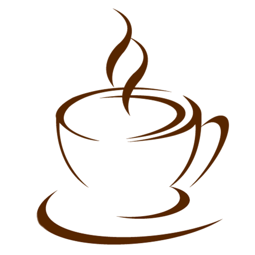
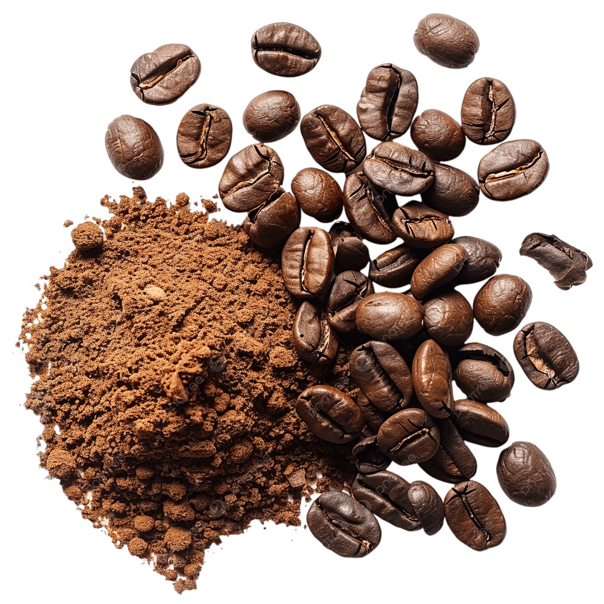
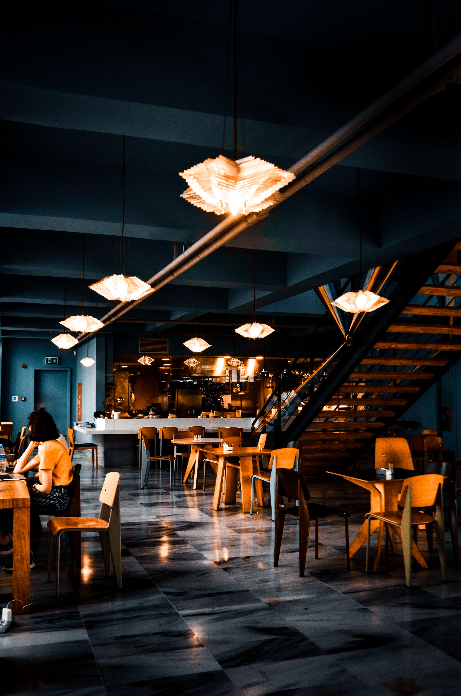

☕ Capuccino
Café espresso com leite vaporizado e uma camada cremosa de espuma, perfeito para qualquer momento do dia.

Descubra cafés especiais preparados com grãos selecionados e aproveite um ambiente acolhedor para tornar seu dia ainda melhor.
Conheça nossos cafés
Café espresso com leite vaporizado e uma camada cremosa de espuma, perfeito para qualquer momento do dia.
Uma deliciosa combinação de café espresso, chocolate, leite vaporizado e chantilly para quem gosta de um sabor mais doce.
Café especial servido com gelo e um toque de leite, refrescante e ideal para os dias mais quentes.

Na Capão Coffee, acreditamos que um bom café é capaz de transformar momentos simples em experiências inesquecíveis. Trabalhamos com grãos cuidadosamente selecionados e preparados por apaixonados pela arte do café.
Nosso ambiente foi pensado para proporcionar conforto, tranquilidade e aquele aroma irresistível de café recém-passado, seja para uma pausa rápida, uma conversa entre amigos ou um momento de trabalho.
Mais do que servir bebidas, queremos criar memórias e fazer parte do seu dia com qualidade, atendimento acolhedor e sabores que conquistam a cada xícara.
A satisfação dos nossos clientes é o que nos inspira a servir o melhor café todos os dias.
"O ambiente é aconchegante e o café simplesmente maravilhoso. Sempre que posso, passo aqui para começar bem o meu dia."
"Atendimento excelente e cafés preparados com muito cuidado. O cappuccino é, sem dúvida, o melhor da região."
"Um lugar perfeito para trabalhar, conversar ou simplesmente aproveitar uma boa xícara de café. Recomendo!"
(11) 99999-9999
@capaocoffee
Capão Redondo - SP